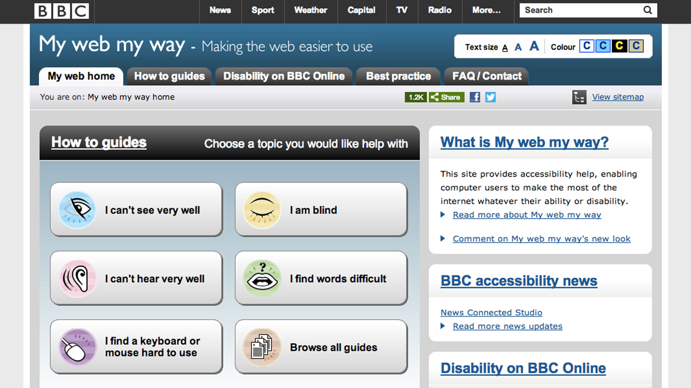

Disabilies and Solutions in IT
Assistive technologies are designed to compensate people with disabilities.
There is the aim to be as a 'normal' individual or even be somewhat extra human, where possible. These technologies, can and do greatly improve the lives of people around the world. But their distribution is often down to the GDP or wealth of the country. Often the poorest countries with the most need are somewhat lacking sufficient support.
Websites and Disabilities
| Hearing | Sight | Mobility | Communication |
|---|---|---|---|
| Cochler Replacement | Blind adaptive walking Sat Nav | Robotic limbs replacements, driveless cars | Robotic Voice assistance as seen with Stephen Hawking |
| Digital Hearing aids | Talking technologies such as Alexa | Seated or walking aids, assisting walking up stairs | Sign language aids |
Some Assistive Website Recommendation
1. Use Alt Tag
2. Create sub titles
3. Put Periods like BBC in abbreviation as B.B.C.
4. Put Descriptions on links
5. Simplify the screen layout
6. Use colour to suit eye impairment
7. Design the website for the disability
